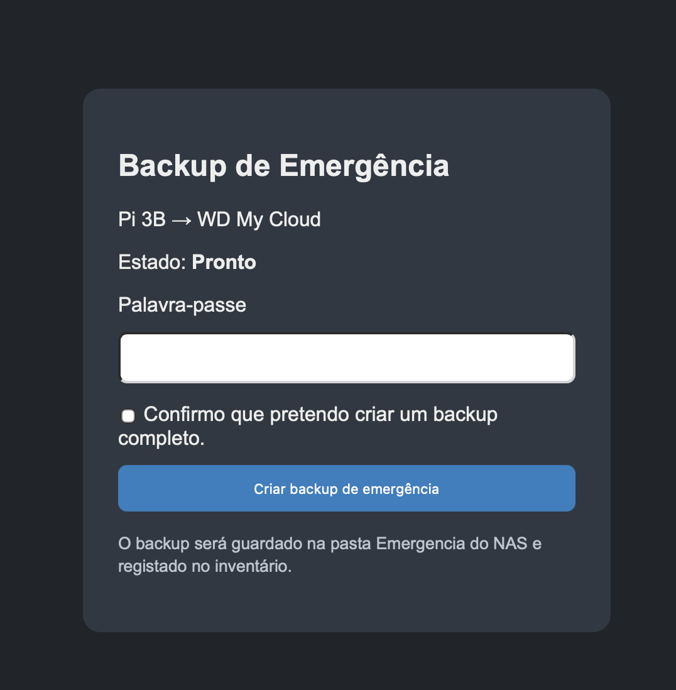
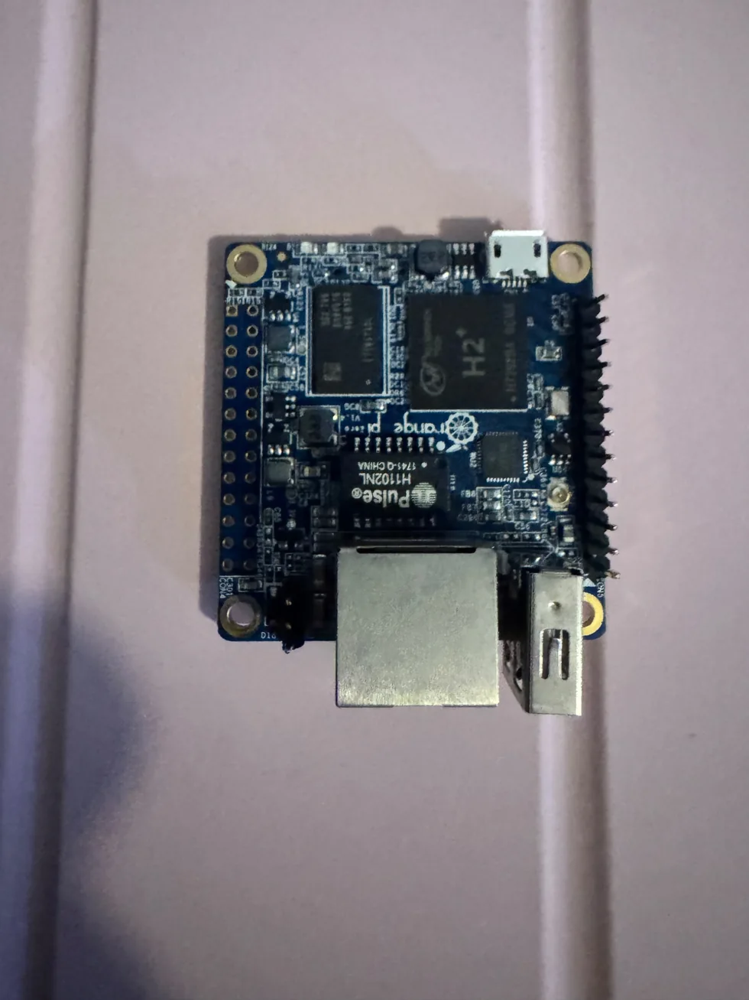

Porque monitorizar?
A monitorização permite identificar serviços indisponíveis, antecipar falhas e compreender tendências operacionais. O objetivo é melhorar a fiabilidade e reduzir o tempo de diagnóstico.


Um dos equipamentos que participa neste trabalho é o Banana Pi M5, com Uptime Kuma, SmokePing e serviços auxiliares de monitorização.
Um dos equipamentos que participa neste trabalho é o Banana Pi M5, com Uptime Kuma, SmokePing e serviços auxiliares de monitorização.
Backups e continuidade
Além da disponibilidade dos serviços, a continuidade depende de processos de backup simples e controlados. Um painel dedicado ajuda a confirmar rapidamente o estado das cópias e a existência de mecanismos de emergência.

Orange Pi Zero: um pequeno computador para uma tarefa específica
Nem todos os serviços precisam de um servidor de grandes dimensões. Um dos exemplos do laboratório é a utilização de um Orange Pi Zero num projeto de monitorização da UPS. A ideia é simples: dedicar um computador pequeno e de baixo consumo à recolha de informação sobre a alimentação elétrica, permitindo acompanhar o estado do equipamento sem depender de uma máquina de trabalho.
A monitorização da UPS integra a rede de servidores (VLAN 40), separada dos dispositivos IoT da VLAN 30. Essa distinção ajuda a organizar a infraestrutura: os sensores e gateways ficam numa área, enquanto os serviços que recolhem e apresentam informação permanecem noutra.
A fotografia mostra a própria placa usada nos testes. Para lá do tamanho, interessa sobretudo a aprendizagem: comunicação com periféricos, diagnóstico de falhas, execução de serviços em Linux e a importância de verificar se as medições continuam disponíveis após uma interrupção.

Exemplos
Indicadores úteis
- Disponibilidade dos serviços principais.
- Consumo de recursos em hosts e containers.
- Capacidade e estado dos suportes de armazenamento.
- Estado e autonomia de UPS, quando disponíveis.
- Resultados de backups e verificações periódicas.
Exemplo: indisponibilidade de um serviço
Quando uma verificação falha, convém confirmar primeiro a conectividade, depois o estado do serviço, os recursos do sistema e os registos. Em seguida, regista-se a causa e a intervenção efetuada.